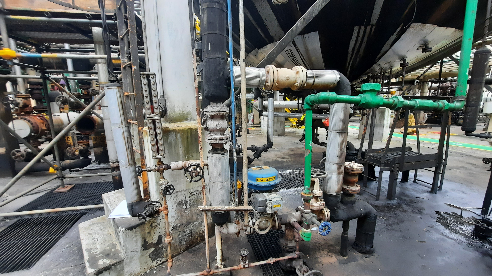
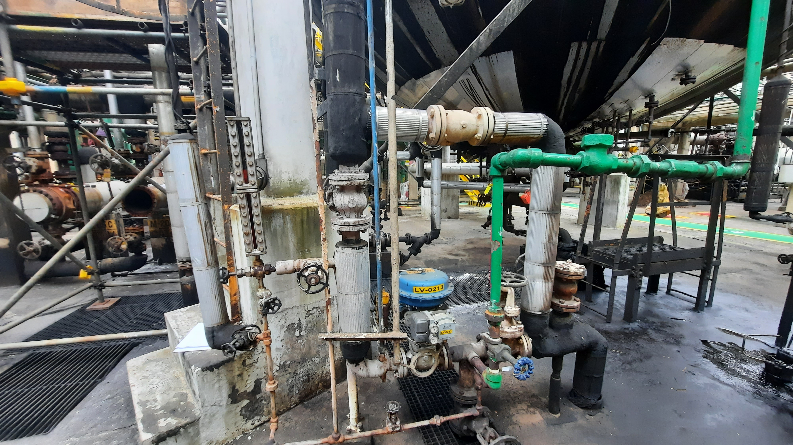


 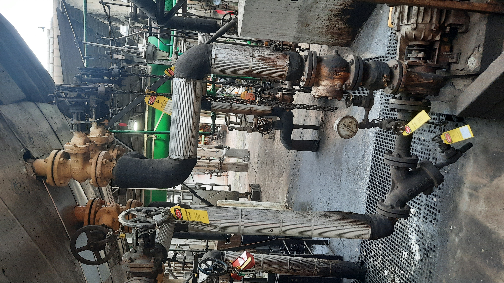
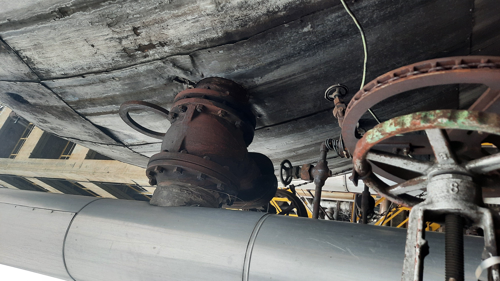
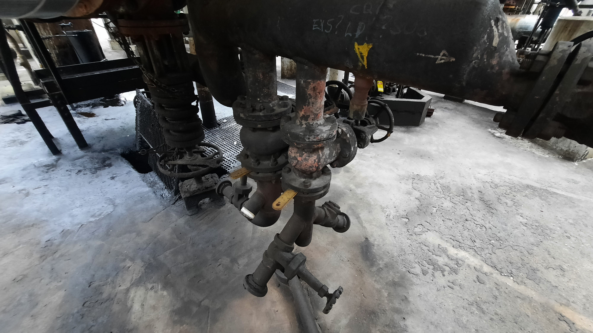
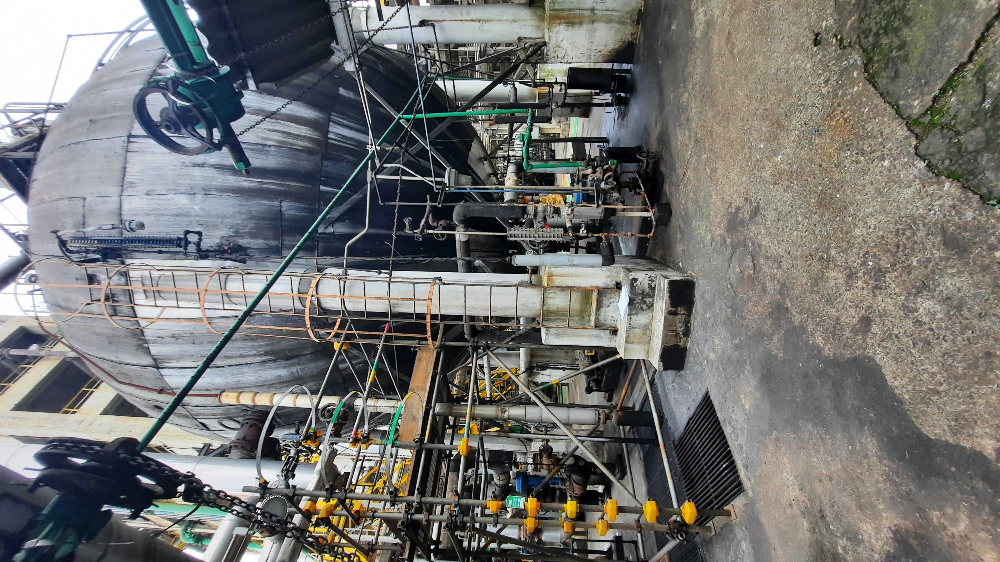
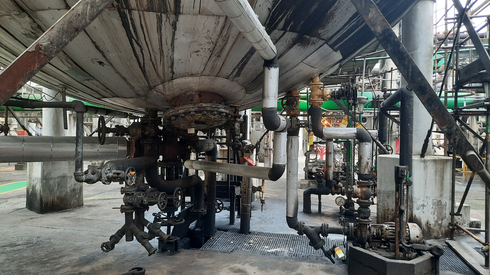
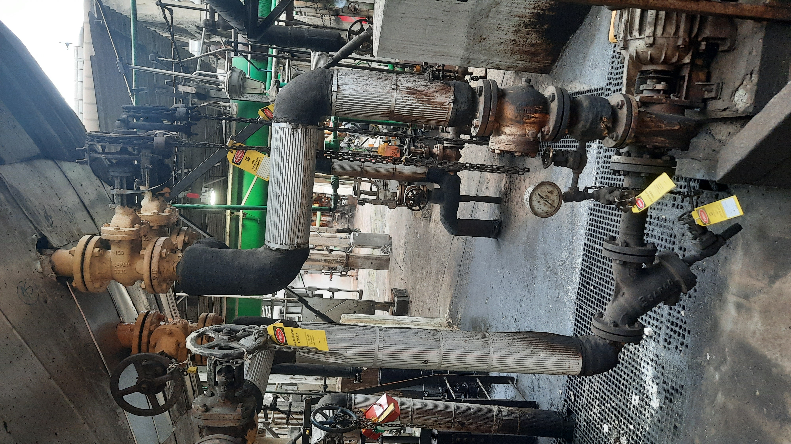
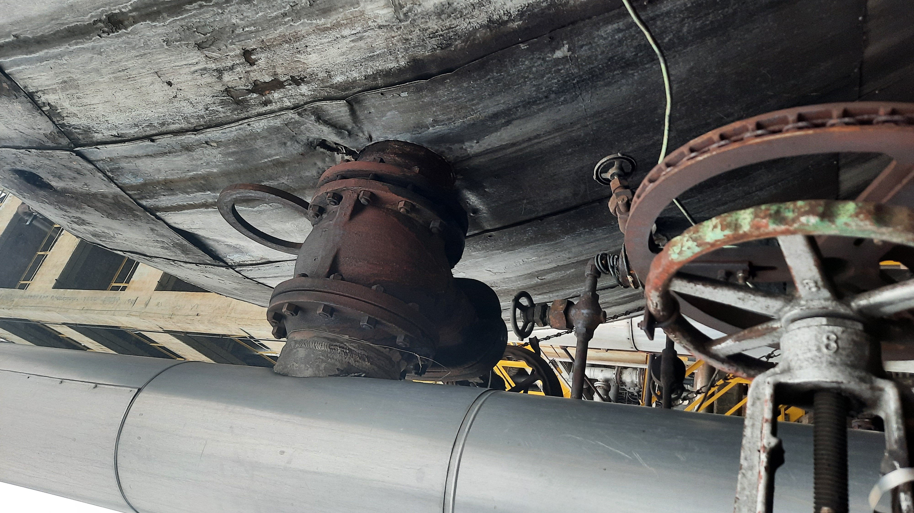
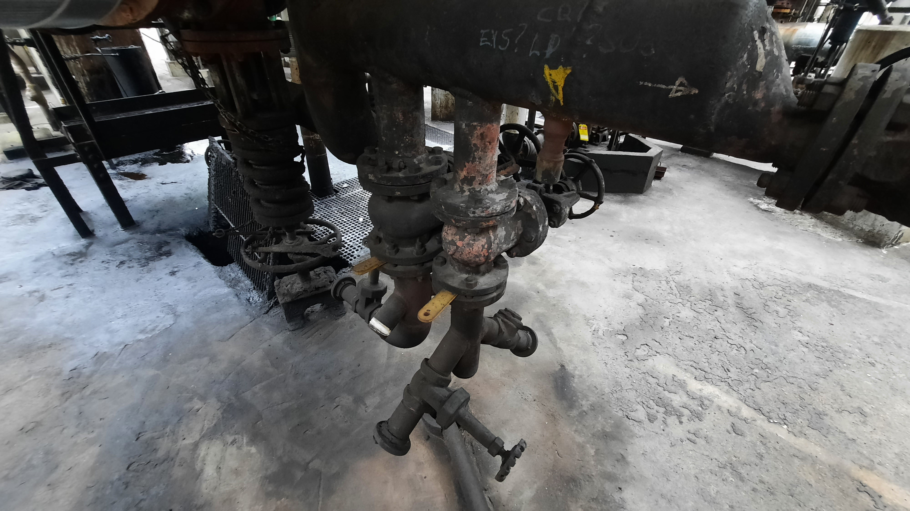
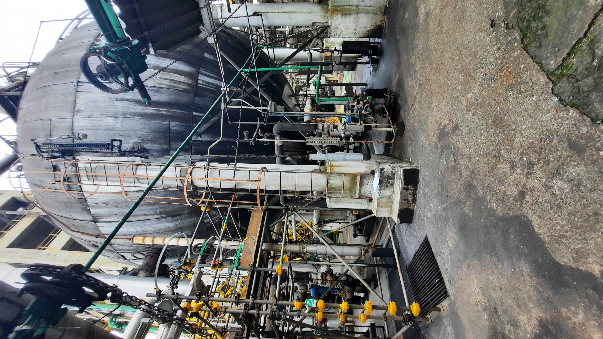
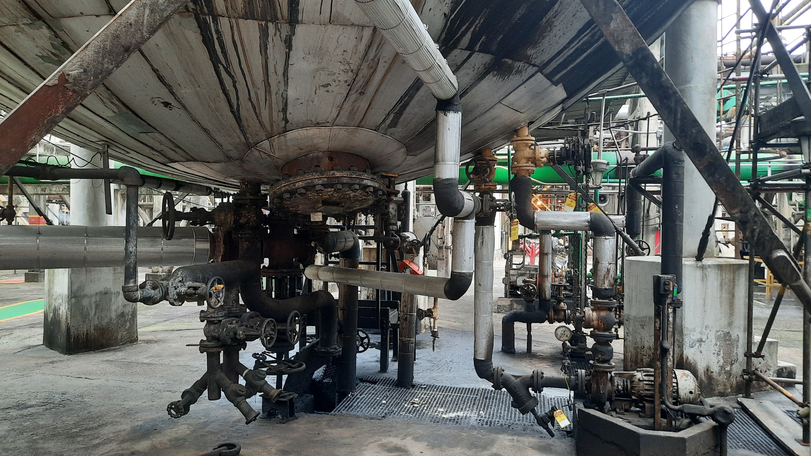
O-0201 DESSALGADORA
-
Parte Externa:
Limpeza manual das conexões e inspeção visual e sônica (martelamento).
Preparação para medição de espessura em pontos definidos.
Inspeção com Partículas Magnéticas (PM) e Líquido Penetrante (LP) nas soldas e componentes de sustentação.
Remoção de descontinuidades detectadas e posterior pintura de componentes (tirantes, escadas, plataformas), seguindo normas Petrobras.
Substituição de conexões, válvulas e outros componentes conforme desenhos e especificações.
Remoção de áreas do isolamento térmico para avaliação de corrosão e reparo.
Parte Interna: Montagem de andaimes e iluminação interna.
Inspeção interna preliminar, seguida de limpeza por hidrojateamento de alta pressão.
Inspeção de calotas, soldas e outros componentes internos com Partículas Magnéticas (PM).
Remoção de descontinuidades internas por esmerilhamento e reparo com solda.
Jateamento abrasivo e repintura da calota inferior interna com tinta epóxi de alta espessura.
Reparos em trechos de tubos, flanges, eletrodos e outros componentes indicados pela inspeção.
Substituição de isoladores de porcelana e anel de vapor conforme especificações.
Essas atividades visam assegurar a integridade estrutural e operacional do equipamento.